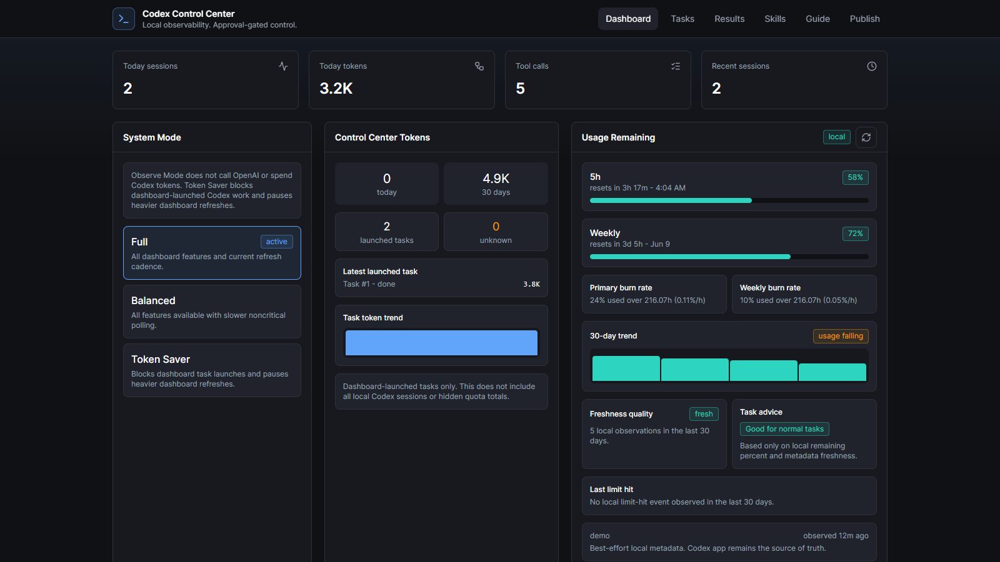
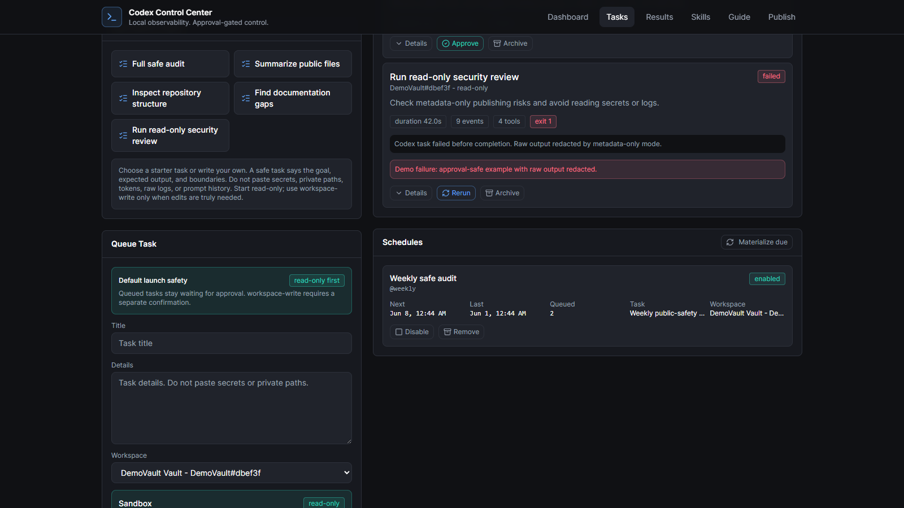
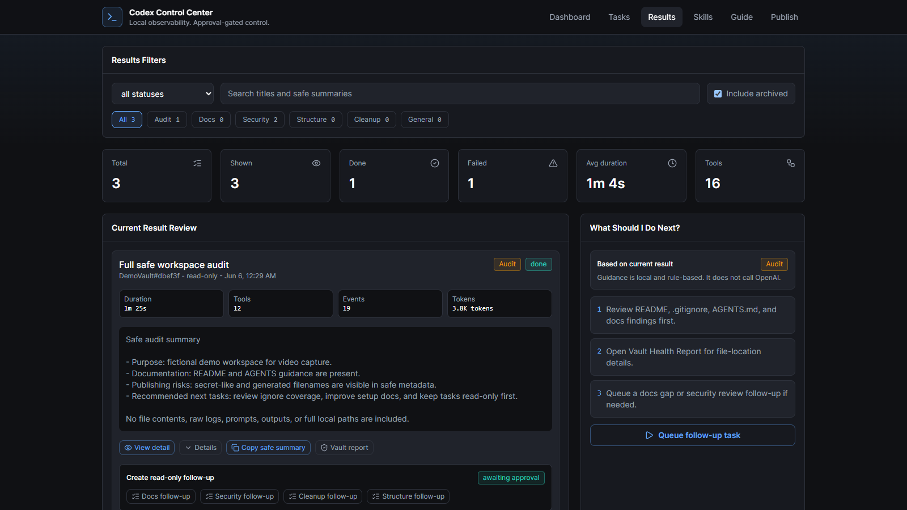
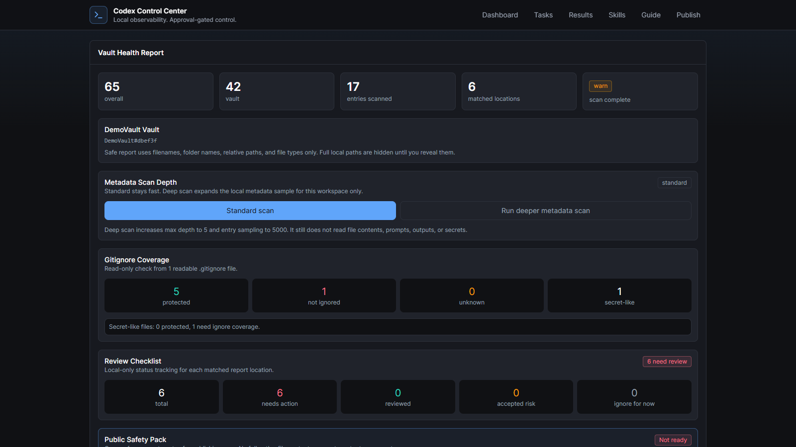
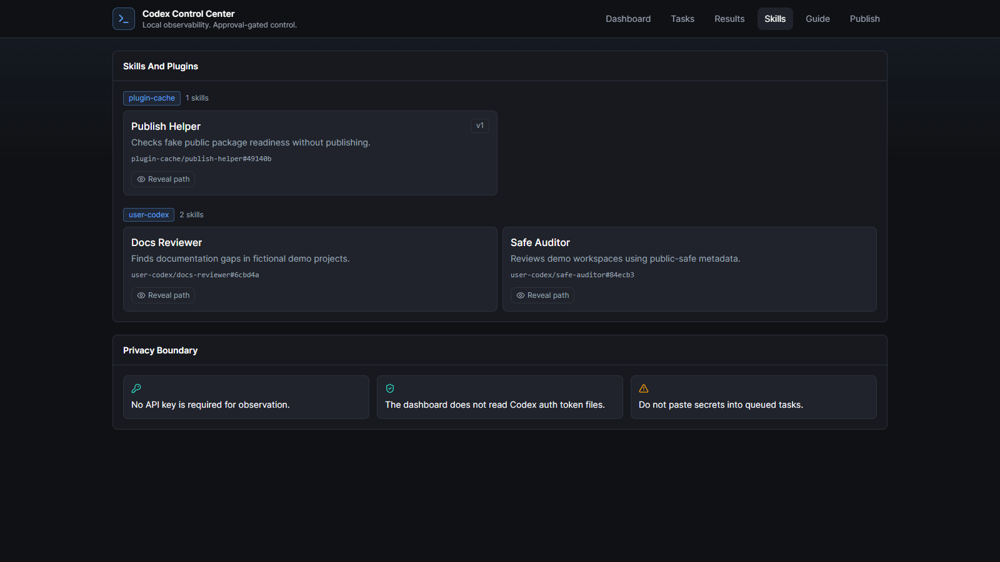
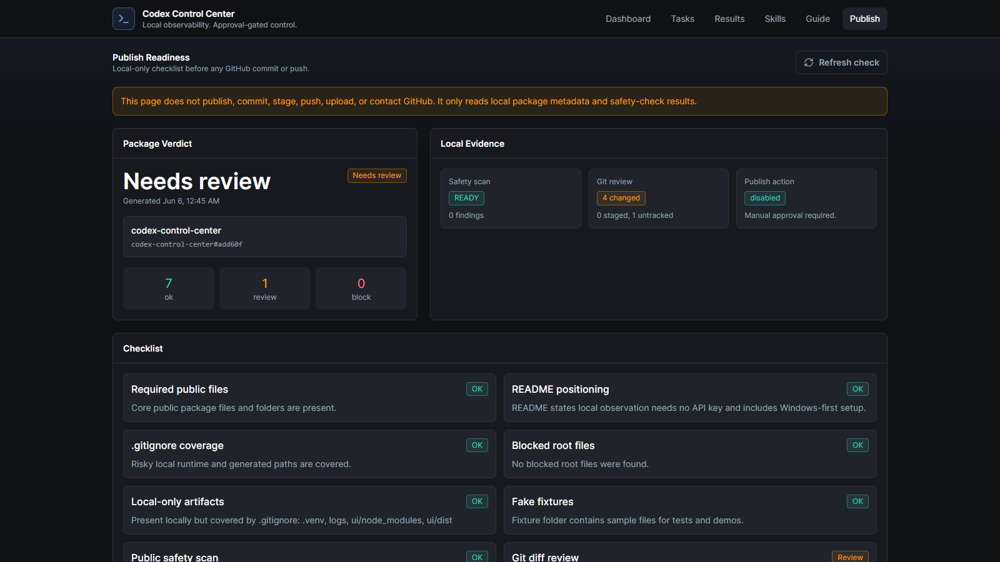

browser demo draft
safe live demo
Navigate the Codex Control Center
A public-safe browser walkthrough using a temporary demo database and fake local metadata.
A browser walkthrough of the safe local workflow
dashboard
Start with visibility
See system mode, account-level usage metadata, readiness scoring, grouped sessions, and local tool activity.
http://127.0.0.1:8766/
Dashboard

metadata-only
Local usage, readiness, sessions, and tool stats stay public-safe.
Dashboard: mode, usage, readiness, sessions
tasks
Choose a folder, then queue safely
Workspaces use safe labels, Safe Starter Tasks fill the form, and read-only stays the default.
http://127.0.0.1:8766/tasks
Tasks

read-only first
New tasks wait for approval before Codex work can launch.
Choose a workspace, start read-only
results
Review safe summaries
Completed work is summarized with duration, tools, category, tokens where available, and next actions.
http://127.0.0.1:8766/results
Results

no raw logs
Results stay focused on safe summaries and follow-up choices.
Results: safe summaries and next actions
vault health
Explain every warning
Vault Health Report shows where metadata-only findings come from, using safe relative paths by default.
http://127.0.0.1:8766/health-report
Report

paths hidden
Full local paths are not revealed in this public demo.
Vault report: relative paths by default
skills
See what Codex can use
Skills and plugin skills are grouped with safe labels. Reveal controls stay available, but unused here.
http://127.0.0.1:8766/skills
Skills

safe labels
The video does not reveal full local skill paths.
Skills stay visible without exposing full paths
publish readiness
Check before sharing
Publish Readiness reviews the package locally and clearly does not publish, commit, stage, push, or upload.
http://127.0.0.1:8766/publish
Publish

does not publish
It only reads local safety signals for human review.
Publish checks without publishing anything
safe loop
Observe locally. Launch deliberately. Share after checks.
No API key required for local observation. Read-only by default. Approval-gated control.
github.com/jqaisystems/codex-control-center
Local-first. Metadata-only. Approval-gated.